Overall Churn Distribution
Churn vs Retained
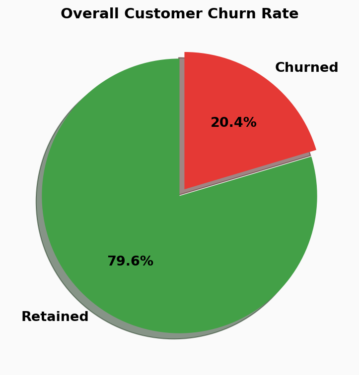
Churn by Gender
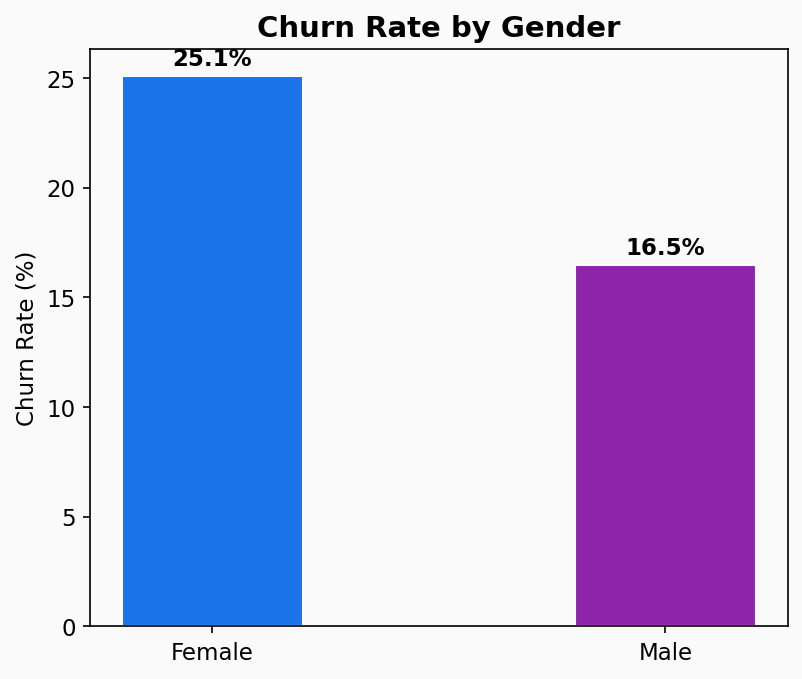
Churn by Number of Products
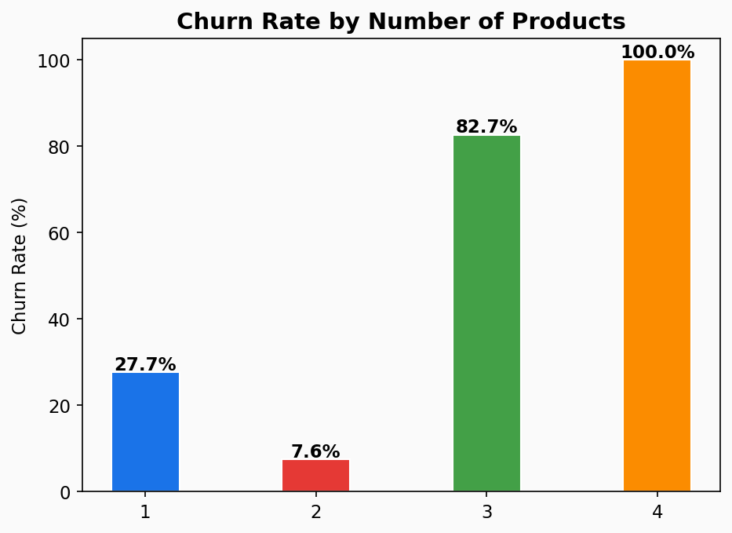
Active vs Inactive Members
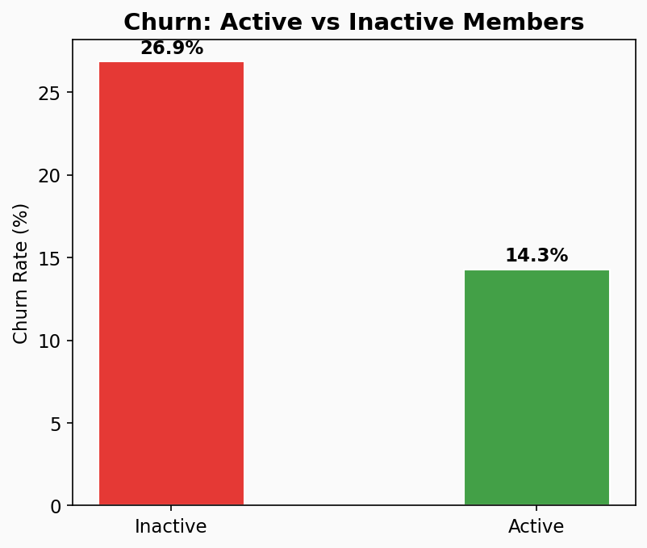
Key Insight: Customers with 3-4 products show significantly higher churn, suggesting over-selling may backfire. Inactive members churn at nearly double the rate of active members.
Geographic Churn Analysis
Churn Rate by Country
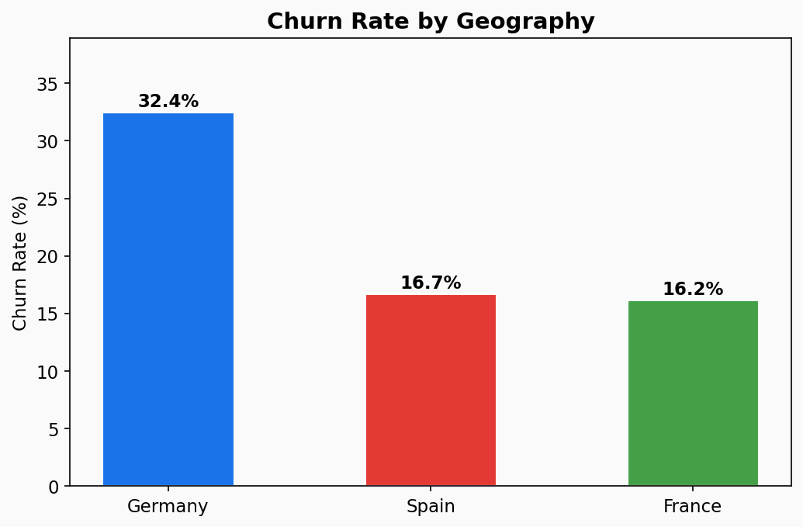
Geography x Age Heatmap
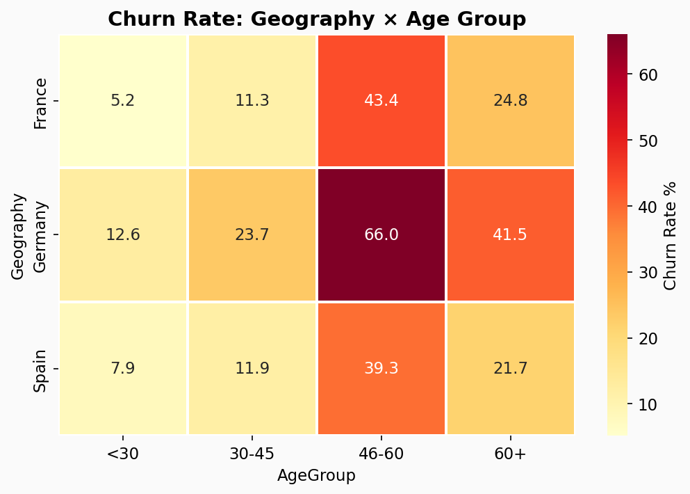
Geographic Risk Index
Key Insight: Germany consistently shows the highest churn rate (1.59x above average) despite having fewer customers than France. This suggests country-specific service quality or competitive pressure issues.
Age & Tenure Churn Patterns
Churn by Age Group
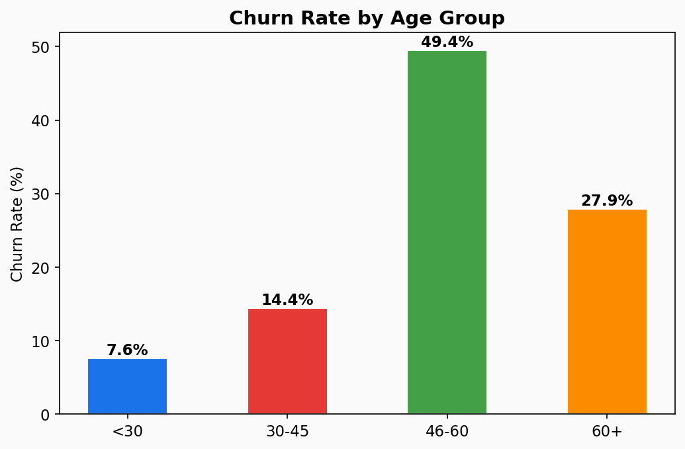
Churn by Tenure Group
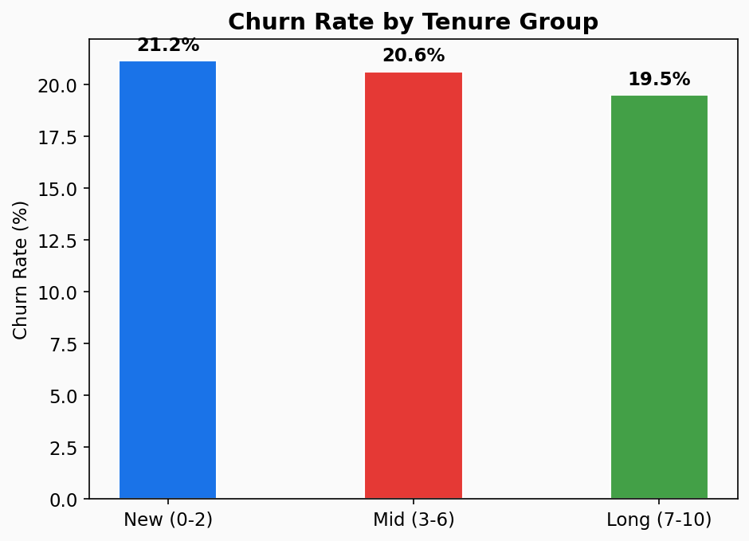
Churn by Credit Score Band
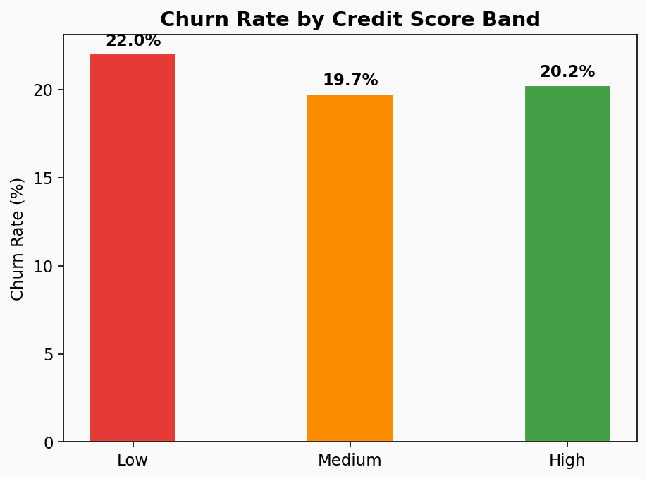
Geography x Age Interaction
Key Insight: Customers aged 46-60 show the highest churn across all geographies. New customers (0-2 years tenure) also show elevated churn — the onboarding experience is critical.
High-Value Customer Churn Explorer
Churn by Balance Segment
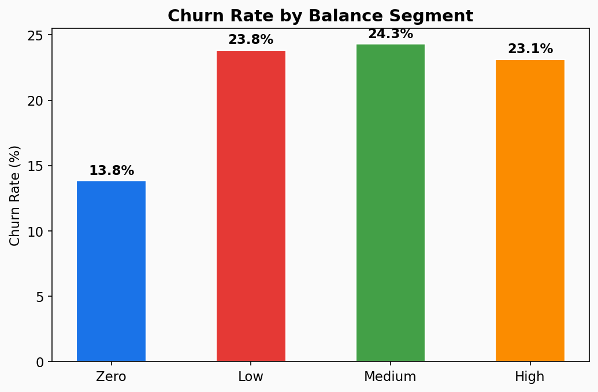
Churn by Credit Score Band
Revenue Risk from Churn
€185.6M
Total Balance Lost
€91,109
Avg Balance (Churned)
€72,745
Avg Balance (Retained)
Key Insight: High-balance customers who churn represent significant revenue risk. Targeted premium retention programs (dedicated relationship managers, preferential rates) are essential.
Machine Learning Model Results
| Model | Accuracy | Precision | Recall | F1-Score | AUC-ROC |
|---|
| Logistic Regression | 80.50% | 58.59% | 14.25% | 22.92% | 0.771 |
| Random Forest | 86.75% | 82.87% | 43.98% | 57.46% | 0.859 |
| Gradient Boosting | 85.90% | 73.95% | 47.42% | 57.78% | 0.856 |
Feature Importance
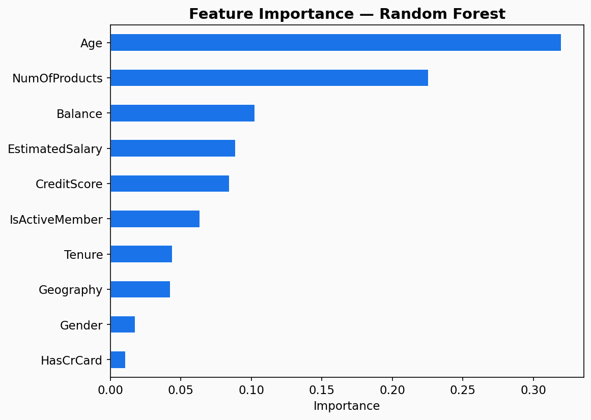
Confusion Matrix
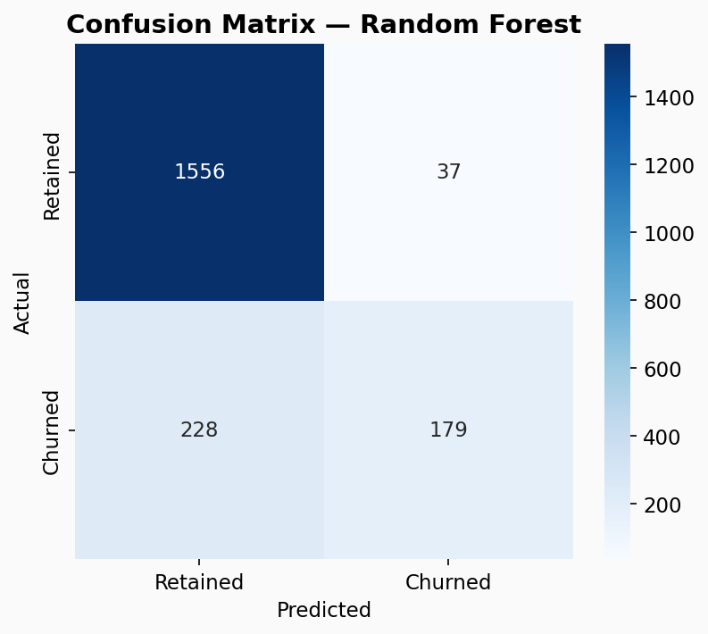
Model Comparison
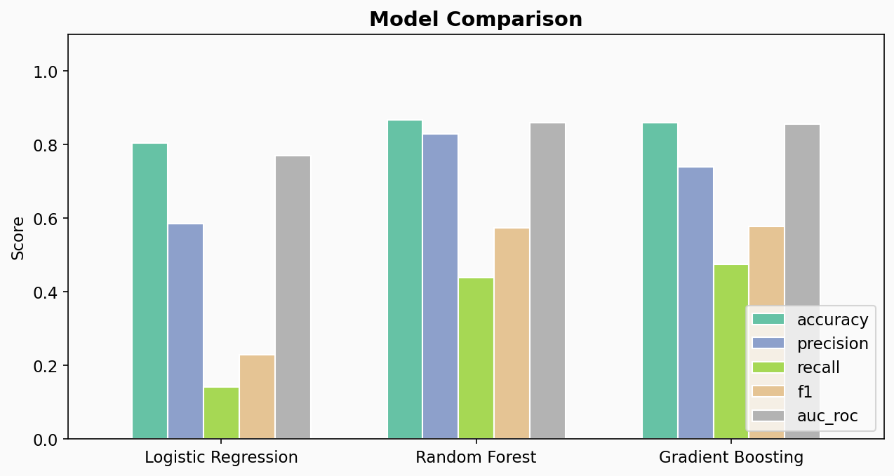
Correlation Matrix
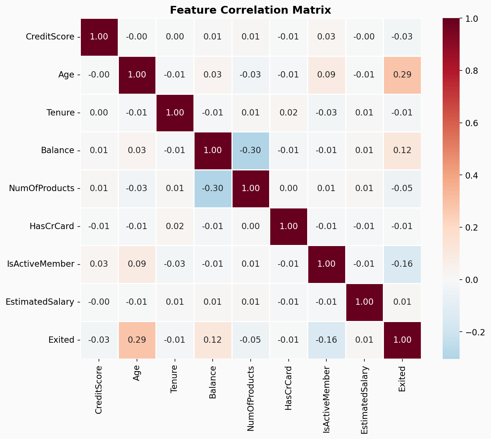
Key Insight: Random Forest and Gradient Boosting significantly outperform Logistic Regression. Age, NumOfProducts, and Balance are the most important features for predicting churn.